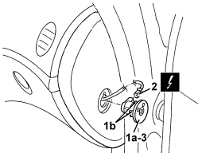
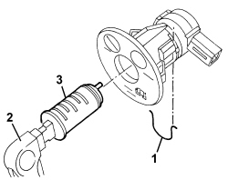

5580C26 PASSENGER AIR BAG DISABLING KEY LOCK BARREL/SWITCH - R.R.
- Path
- Procedures > 55 ELECTRICAL EQUIPMENT > 5580 SPECIAL ACCESSORIES > 5580C AIR BAG SYSTEM > 5580C26 PASSENGER AIR BAG DISABLING KEY LOCK BARREL/SWITCH - R.R.
- Kind
- repair procedure (removal / refitting; the operation number is the code)
- Applies to
- all engines; all production periods
- Interactive page
- https://sloeber94.github.io/elrnDB-aBrrSpdr/en/#/946002466
Applies to: all engines; all production periods
 Removing
Removing
 Refitting
Refitting- Extract the electronic key.
- Disconnect the battery.
1. Extract the vent (1a), releasing the retaining clips (1b).
2. Disconnect the electrical connection.
Description | Component |
|---|---|
PASSENGER AIRBAG DISABLEMENT SWITCH |
3. Keep the switch

Applies to: all engines; all production periods
- If necessary, remove the airbag switch barrel as follows.
1. Remove the lock retaining clip
2. fit the vehicle key in the barrel.
3. Remove the barrel.

Applies to: all engines; all production periods
Refitting
Removing- Check that the switch and the lock are not damaged and, if necessary, conduct an electrical test.
- Position the barrel in its housing.
- Fit the clip and do up.
- Remove the vehicle key from the barrel.
- Connect the electrical connection.
- Insert the switch and do up the retaining clips.
- Connect the battery.
- Use an Examiner to check that the system has not acquired errors during the operation.
Topics linked from this page (2)
Topics that link to this page (29)
- K079 PASSENGER AIR BAG DISABLEMENT WARNING LIGHT FLASHING
- K082 PASSENGER AIR BAG DISABLED WARNING LIGHT ON
- 1820B21 MASTER CYLINDER (PUMP) - R R FOR RIGHT HAND DRIVE VERSIONS
- 3330B02 PEDAL ASSEMBLY - R.R
- 3330B23 BRAKE PEDAL - R.R. FOR RIGHT HAND DRIVE VERSIONS
- 3330B27 CLUTCH PEDAL - R.R. FOR RIGHT HAND DRIVE VERSIONS
- 3330B42 PEDAL UNIT SUPPORT - R.R. FOR RIGHT HAND DRIVE VERSIONS
- 3330D18 BRAKE SERVO R R FOR RIGHT HAND DRRIVE VERSIONS
- 5010B24 UNDER-FACIA AIR DUCTS - R.R.
- 5040C10 AIR CONDITIONING CASING - R.R
- 5040C50 AIR CONDITIONING HEATER RADIATOR - R.R.
- 5040C64 A/C EVAPORATOR - R+R
- 5040D80 AIR CONDITIONING SYSTEM CABLE LOOM - R.R. OR REPLACE
- 5040D86 AIR CONDITIONING RIGHT AIR MIXTURE FLAP CONTROL MOTOR - R.R
- 5040D94 AIR CONDITIONING LEFT UPPER AIR DISTRIBUTION FLAP MOTOR (DEFROST) - R.R
- 5040D96 AIR CONDITIONING RIGHT UPPER DISTRIBUTION FLAP MOTOR (DEFROST) - R.R
- 5505C31 BUILT-IN WIRING UNDER DASHBOARD - R.R.
- 5580C22 AIR BAG MODULE - PASSENGER SIDE - R.R
- 5580C24 PASSENGER SIDE AIR BAG MODULE SUPPORT R. R.
- 7005C20 FRONT SIDE DOOR LOCK BARREL - REPLACE WITH DIFFERENT UNIT
- 7040A10 DASHBOARD TRIM - R+R
- 7040A45 RIGHT DASHBOARD SIDE TRIM - R.R.
- 7210A74 R R FACIA SUPPORT BEAM
- E7030 AIR BAG - WIRING DIAGRAM
- E7030 AIR BAG - COMPONENT LOCATION
- E7030 AIR BAG - WIRING DIAGRAM
- E7030 AIR BAG - COMPONENT LOCATION
- E7030 AIR BAG - WIRING DIAGRAM
- E7030 AIR BAG - COMPONENT LOCATION